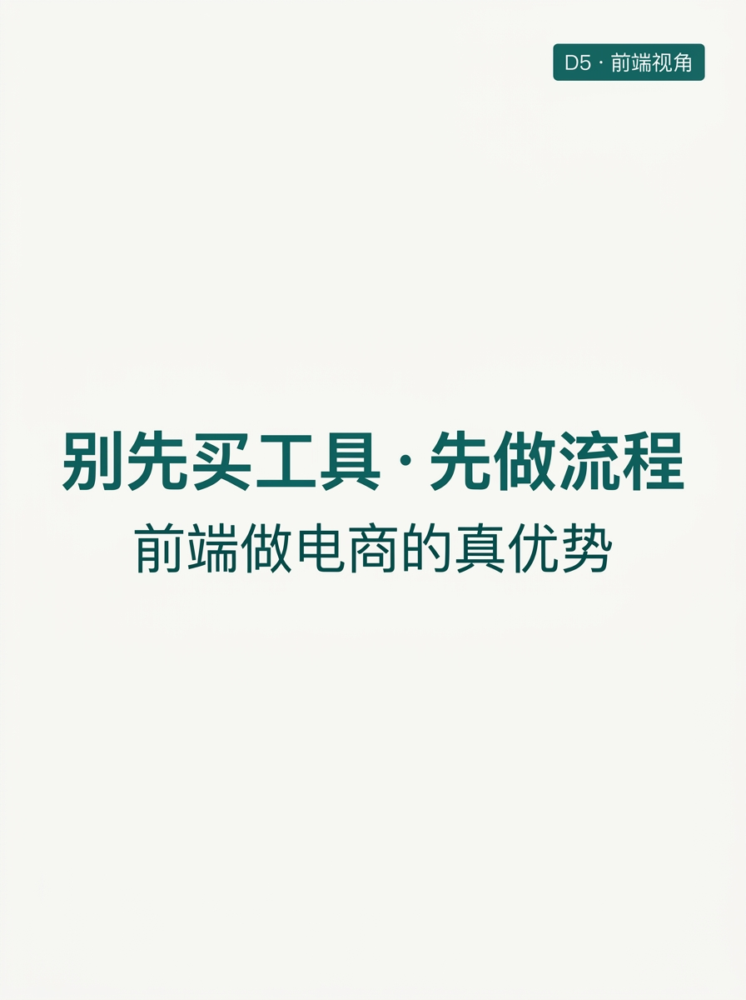
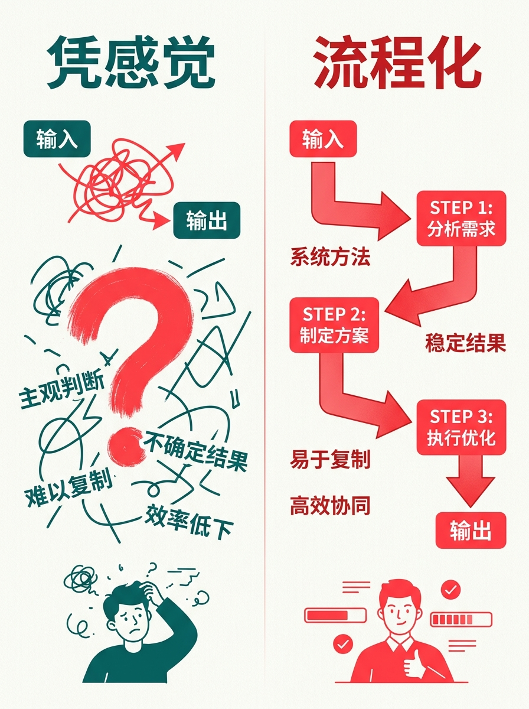
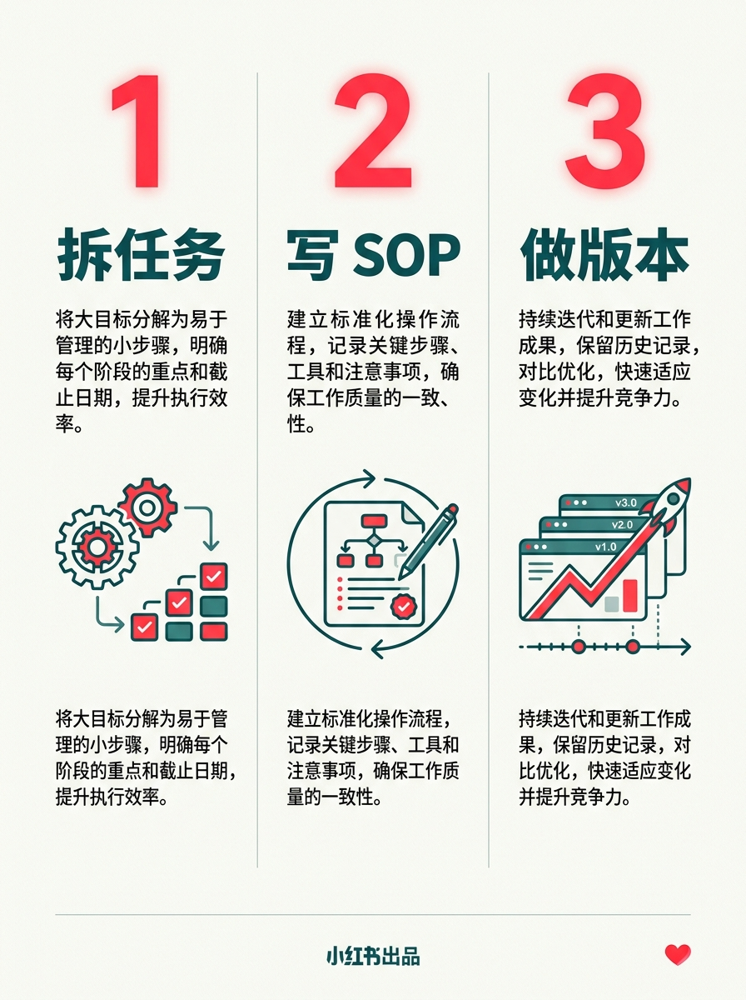
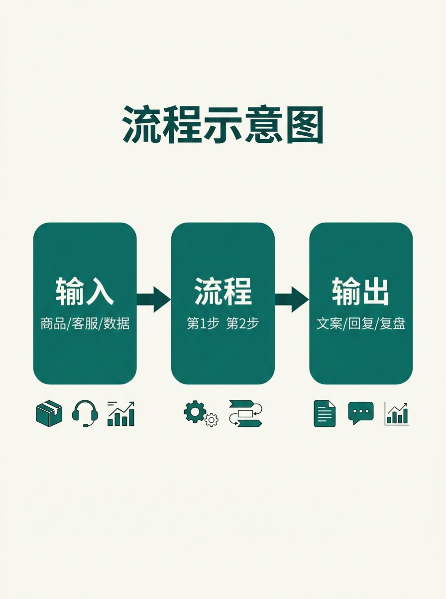
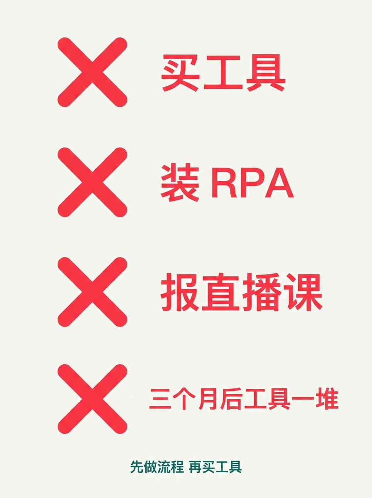
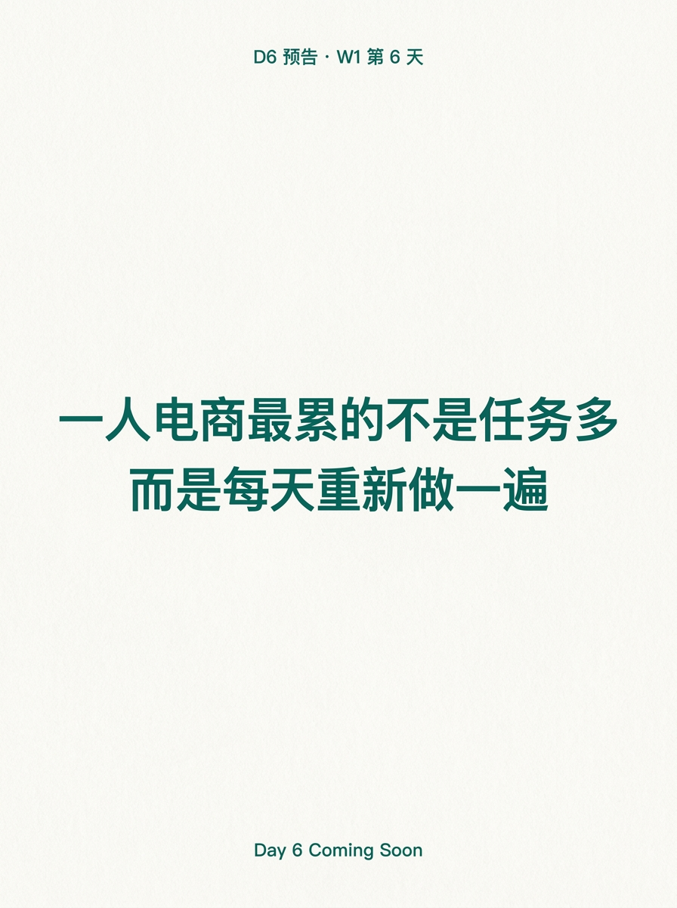

使用说明:所有内容已经按发布标准预排好,发布前请用最后一步的 3 个按钮复制。
6 张图按顺序上传小红书即可。






把凭感觉变可重复 · 程序员做电商的优势
做电商 30 天,被问最多的一句话: "程序员转电商,代码能力是优势吗?" 不是。 会写代码 ≠ 会做电商。 真正帮到我的,是一个思维习惯: 把"凭感觉"的事,变成"可重复"的流程。 ───── 电商人最常踩的坑:先买工具 ───── 看到同事用 AI 写文案 → 自己也想买 看到有人用 RPA → 自己也装一个 看直播课"1 招日销 100 单" → 立刻报名 三个月后,工具一堆,流程没一条跑通。 买工具是"想要结果"。 做流程是"先搞清怎么产出结果"。 顺序反了,工具越多越乱。 ───── 流程化思维 = 输入 → 流程 → 输出 ───── 输入:商品详情页 / 客服对话 / 销售数据 ↓ 流程:每一步做什么、谁来做、做到什么程度算合格 ↓ 输出:可发布文案 / 客服标准回复 / 每日复盘表 凭感觉:输入 → (大概齐) → 输出 流程化:输入 → 第 1 步 → 第 2 步 → … → 输出(可校验) 工程师最擅长的事: 把模糊交付拆成"可校验的步骤"。 ───── 程序员做电商的 3 个真优势 ───── ① 拆任务:把"做电商"拆成 上架 / 客服 / 复盘 / 选品 4 个独立模块 ② 写 SOP:每模块一份"输入→输出"对照表,新人都能照着跑 ③ 做版本:每周迭代 SOP,哪条效果好就留下,效果差就回滚 凭感觉的人,30 天后还在凭感觉。 做流程的人,30 天后已经跑通 3 条线。 ───── 怎么开始(今天就能做)───── 挑你当前最乱的那块业务 —— 文案 / 客服 / 选品 / 复盘 花 1 小时写一份"输入 → 流程 → 输出"对照表 哪怕只跑通 1 步,也算开始。 评论区:你做电商,凭感觉还是做流程? 👇 ───── Day 6 预告 ───── W1 第 6 天 · 一人电商最累的不是任务多 而是每天重新做一遍 关注我,看 30 天跑完我会得出什么结论 🌱
#前端转AI电商
#程序员
#工程化思维
#电商流程
#做电商
♡ 收藏
💬 评论
↗ 分享
📋 一键复制
📊 D5 数据复盘
核心论点: 程序员做电商的真优势不是写代码,是"把凭感觉的事拆成可校验步骤"—— 流程化思维
对比维度: 凭感觉(输入→大概齐→输出) vs 流程化(输入→第1步→第2步→…→可校验输出)
可迁移 3 优势: 拆任务 / 写 SOP / 做版本 —— 任何"凭感觉"的业务都能套
互动钩子: "你做电商,凭感觉还是做流程?" —— 二选一,低门槛、易共鸣、利于评论区晒经验
🚀 发布前 15 分钟 SOP
- 打开小红书 App → 创建笔记
- 选 6 张图(封面 1 + 内页 5),按顺序排好
- 选 3:4 竖图
- 标题:把凭感觉变可重复 · 程序员做电商的优势
- 正文:点"复制正文"按钮粘贴
- 加 5 个标签
- 选发布时间:周五 20:00-21:00
- 发布
📈 发布后 24 小时 SOP
| 时间 | 动作 | 目标 |
|---|---|---|
| 10 分钟 | 自己评论扣 1("你做电商,凭感觉还是做流程?") | 激活评论区话题 |
| 30 分钟 | 每条评论都回复 | 活跃感 |
| 2 小时 | 截图保存首日数据 | 复盘素材 |
| 6 小时 | 看一次数据 | 判断是否二次推 |
| 24 小时 | 统计 D1-D5 累计,决定 D6 钩子 | W1 收官节奏 |
🎯 Day 5 数据目标
| 指标 | 目标 | 备注 |
|---|---|---|
| 曝光 | ≥ 800 | 观点类在 W1 末段需要拉曝光 |
| 收藏率 | ≥ 6% | 观点类收藏率天然低于干货类 |
| 评论 | ≥ 80 | 二选一问题易激发表态,评论率更高 |
| 涨粉 | ≥ 100 | 人设型笔记 W1 末段冲一波 |
| D6 钩子 | 一人电商最累的不是任务多 | 承接 D5 的"流程化"概念 |
💡 关键设计点
1. 标题 = 反常识钩子
- "把凭感觉变可重复" = 反常识(电商人都习惯凭感觉)
- "程序员做电商的优势" = 身份锚定 + 答案导向
2. 正文 = 4+3+1 结构
- 4 段场景铺垫(钩子 → 踩坑 → 流程化定义 → 3 优势)
- 3 个真优势(拆任务 / 写 SOP / 做版本 —— 可迁移)
- 1 句行动指令(今天就做 1 份 SOP 对照表)
3. 图文对应
- 图 01 = 封面("别先买工具 · 先做流程"大字)
- 图 02 = 凭感觉 vs 流程化(对比图,核心观点)
- 图 03 = 3 个优势(拆任务 / 写 SOP / 做版本)
- 图 04 = 输入 → 流程 → 输出(流程图型)
- 图 05 = 常见坑(买工具 / 装 RPA / 报直播课 / 三个月后)
- 图 06 = Day6 预告(系列感)
4. 工程师视角 = 差异化锚点
- "工程师最擅长的事:把模糊交付拆成可校验步骤"
- 把"工具论"反转为"流程论"—— W1 末段人设收官
- 承接 D4 的"加 fact-check 关卡"→ D5 的"先做流程再买工具"
⚠️ 注意事项
- 不要删"凭感觉 vs 流程化"对比图—— 这是 D5 的核心论点可视化
- "工程师最擅长"那句要保留—— 差异化锚点,人设核心
- 3 个优势要按"拆 → 写 → 迭代"顺序—— 工程师思维的自然顺序
- 6 张图必须按顺序—— 封面(钩子)→ 对比(观点)→ 3优势(支撑)→ 流程图(方法)→ 避坑(共鸣)→ 预告(系列)
- 正文里 ❌ 用小红书红 #ff2442—— 警示色贯穿